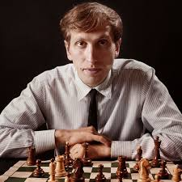

Welcome to My Website where there is a daily puzzle and chess bot
top two greatest chess players

Robert James Fischer was an American chess grandmaster and the eleventh World Chess Champion. A chess prodigy, he won his first of a record eight US Championships at the age of 14. In 1964, he won with an 11–0 score, the only perfect score in the history of the tournament.
Sven Magnus Øen Carlsen is a Norwegian chess grandmaster. He is a five-time World Chess Champion, the reigning five-time World Rapid Chess Champion, the reigning seven-time World Blitz Chess Champion, and the reigning Chess World Cup Champion.